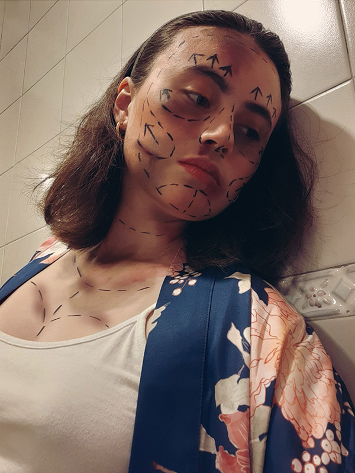
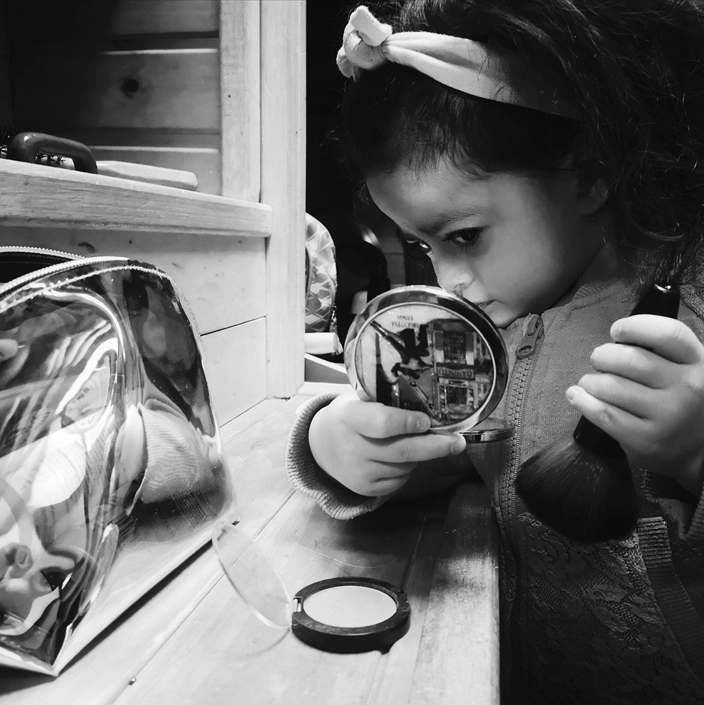

Retrato
MIRANDO A OTROS
“Un retrato no es un hecho; es sólo una opinión. La superficie es lo único que consigues captar”
Richard Avedon
El retrato es uno de los géneros fotográficos que más se ha explorado desde el inicio de la fotografía.
En el discurso del siglo XIX, los mejores retratos revelaban el espíritu, el ser interno o la esencia del modelo. Su objetivo requería poses estereotipadas y exageradas que fueron caricaturizadas.
“Retratarse era proclamar la propia identidad, la posición que alguien ocupaba en el mundo; era unindicio de éxito”
Por décadas se abordó este retrato bajos estrategias convencionales que fueron cuestionadas bajo varias corrientes y propuestas que buscaban nuevas maneras de representación que pasaron de sustituir la claridad por lo borroso; lo instantáneo por el momento elástico y la realidad por la
hiperrealidad.
MICHELLE RIOS
GERHARD BRUHL
MICHELLE RIOS
NICOLAS VALENZUELA
NICOLAS SÁNCHEZ
NICOLAS SÁNCHEZ

DANIEL PINTO
MARÍA TORRES
XIOMARA RAMIREZ
ISABELLA BONILLA
KAROL PINTO
LINDA SÁNCHEZ
ISABELLA BONILLA

JULIANA BEJARANO
ISABELLA BONILLA
YENNY GARCÍA
KAROL PINTO
CLAUDIA RIVEROS
FELIPE MARTÍNEZ
JULIANA DAZA
JULIANA BEJARANO
JULIANA RINCÓN
TATIANA NARANJO
TATIANA NARANJO
MARIA LÓPEZ
MANUELA CARDENAS
CAMILO VINASCO
SANDRA SUAREZ

SANDRA SUAREZ
SANDRA SUAREZ
NATALIA JUNCO
JAHILIM OSORIO
JAHILIM OSORIO
ANNY URIBE
LAURA VARGAS
CAMILA MORENO
PAULA SERNA
SOFIA MANRIQUE
SANTIAGO MORENO
KAREN SASTOQUE
NATALIA JUNCO
JULIANA RINCÓN

CAMILO VINASCO
JULIANA RINCÓN
MANUELA CARDENAS
LUISA BORJA
LUISA BORJA
LUISA BORJA